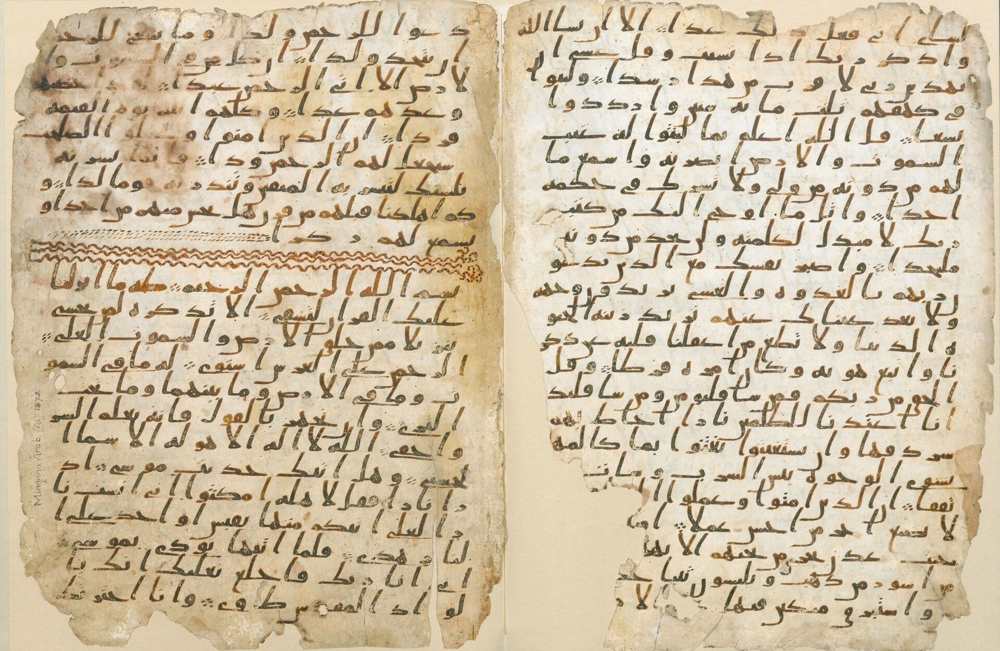

Как выводится исламское право: Коран, Сунна, иджма' и кияс (основы усуль аль-фикх)
Ответ на вопрос «почему это халяль, а это харам?» — не случайное мнение, а результат определённой методологии. Эта справка разграничивает понятия шариат, фикх и усуль аль-фикх и просто объясняет четыре главных источника, из которых выводятся нормы в суннитском исламе — Коран, Сунну, иджма' и кияс. Статья соответствует суннитской (преимущественно ханафитской) традиции, нейтральна и основана только на надёжных источниках.

Большинство людей слышат, что некое действие в исламе халяль или харам, но редко задумываются, откуда берётся эта норма и по какому правилу она выводится. На самом деле нормы фикха — не случайные мнения, они выводятся из согласованных источников по точной методологии, называемой усуль аль-фикх. Эта справка сначала разграничивает три понятия — шариат, фикх и усуль аль-фикх, — а затем по порядку объясняет четыре главных источника в суннитском исламе: Коран, Сунну, иджма' и кияс. Статья не вступает в межмазхабные споры; она лишь об источниках и методе, написана нейтрально и основана на надёжных источниках (Источник: Oxford Reference — Fiqh; Dar al-Ifta Египта — Islamic Legal Theory).
Шариат, фикх и усуль аль-фикх — различие
Эти три слова в повседневной речи часто используют как синонимы, но учёные их тщательно разграничивают. ШАРИАТ (араб. «путь») — это божественное руководство, данное Богом в Коране и в примере Пророка ﷺ; как божественный идеал он считается неизменным и полным. ФИКХ (букв. «глубокое понимание») — это ЧЕЛОВЕЧЕСКОЕ усилие квалифицированных учёных превратить этот божественный путь в конкретные нормы через изучение, размышление и обсуждение; поскольку фикх — продукт человеческий, он может ошибаться, меняться и порождать законные расхождения. УСУЛЬ АЛЬ-ФИКХ (букв. «корни/основы фикха») — это методология выведения фикха из откровения, теория, определяющая, на какие источники и правила толкования опираться. Коротко: шариат — божественный путь; фикх — человеческое понимание его учёными; усуль аль-фикх — упорядоченный метод, которым это понимание выводится. Именно поэтому искренние учёные могут приходить к разным выводам, и при этом ни один из них не «не знает закон Бога» (Источник: Oxford Reference — Fiqh; Dar al-Ifta Египта; IslamQA — различие между шариатом, фикхом и усуль аль-фикх).
Четыре главных источника
Четыре суннитских мазхаба (ханафитский, маликитский, шафиитский, ханбалитский) согласны в четырёх источниках для выведения норм, в порядке авторитетности. (Некоторые книги называют все четыре «основными»; другие выделяют Коран и Сунну как два первичных/богооткровенных источника, а иджма' и кияс — как два вторичных/производных; оба подхода распространены.) Первый — КОРАН: слово Бога, ниспосланное Пророку ﷺ в течение около 23 лет; это первый и высший источник, и ни одна норма не может ему противоречить. Следует отметить, что Коран прежде всего книга руководства, и из более чем шести тысяч его аятов лишь несколько сотен прямо касаются правовых норм — именно поэтому остальные источники служат для разъяснения его принципов (Источник: Dar al-Ifta Египта; Oxford Reference).

Второй источник — СУННА (или хадис): слова, действия и молчаливые одобрения Пророка ﷺ, переданные через сообщения, называемые хадисами. Сунна разъясняет, уточняет и детализирует Коран — например, Коран предписывает молитву, но число ракаатов и способ её совершения берутся из Сунны. Правовую силу несут только достоверные (сахих) хадисы; поэтому в науке о хадисах сложился строгий метод проверки цепочки передачи (иснад) и надёжности передатчиков. Третий источник — ИДЖМА': единогласное согласие квалифицированных учёных (муджтахидов) определённой эпохи по правовому вопросу. Его авторитет основан на принципе, что сообщество учёных уммы не объединится на ошибке; когда по вопросу достигнут подлинный консенсус, он считается обязательным. На практике самый надёжный консенсус принадлежит ранним поколениям, а то, как может устанавливаться более поздний консенсус, обсуждается среди учёных (Источник: Wikipedia — Ijma; Oxford Reference; Dar al-Ifta Египта).
Четвёртый источник — КИЯС: распространение нормы, установленной в текстах (Коране или Сунне), на новый случай, не упомянутый в них, потому что они разделяют одну и ту же «иллу» (действующую причину). У кияса четыре опоры: асль (исходный текстовый случай), фар' (новый случай), норма асля и илля (причина, порождающая норму). Классический учебный пример: Коран запрещает хамр — виноградное вино (сура «аль-Маида», аят 90). Учёные определили иллу этого запрета как свойство опьянения (искар). На основе этой иллы запрет распространяется на все опьяняющие вещества, разделяющие ту же причину, — включая современные наркотики, неизвестные в эпоху откровения. То есть норма следует за причиной: где есть опьянение, там действует запрет (Источник: Wikipedia — Qiyas; Dar al-Ifta Египта).
Дополнительные инструменты (различаются по мазхабам)
Помимо четырёх главных источников есть дополнительные инструменты, которые некоторые мазхабы принимают в разной степени; их статус и определение различаются от школы к школе, поэтому они рассматриваются не как «общепризнанные источники», а как «инструменты, которыми пользуются некоторые правоведы». Истихсан — отступление от строгой аналогии в пользу нормы, которая лучше соответствует цели закона в конкретном случае; он больше всего связан с ханафитским мазхабом. Истислах/маслаха — норма, основанная на общем благе там, где тексты молчат; связана в основном с маликитским мазхабом. Урф — здоровый местный обычай, не противоречащий текстам; широко применяется в ханафитском (и маликитском) фикхе, особенно в сделках и договорах, что значимо и для центральноазиатского/узбекского контекста. Истисхаб — презумпция, что положение дел сохраняется, пока нет доказательств его изменения (например, презумпция невиновности). Садд аз-зараи' — блокирование в остальном дозволенного действия, когда оно надёжно ведёт к вреду или запретному исходу; связано в основном с маликитским и ханбалитским мазхабами. Следует отметить, что учёные расходятся в том, какие из них считать самостоятельным «источником», а какие — гранью кияса/иджтихада, и какой вес несёт каждый; и это расхождение само по себе — естественная черта традиции (Источник: Wikipedia — Istihsan; Principles of Islamic jurisprudence; Oxford Reference).
Иджтихад, таклид и почему мазхабы различаются
Иджтихад — это предельное усилие квалифицированного учёного вывести норму непосредственно из источников с помощью усуль аль-фикх; делающий это — муджтахид, к которому предъявляются строгие требования, такие как владение арабским языком, Кораном, хадисами, пунктами консенсуса и правовой теорией. Основатели четырёх школ — Абу Ханифа, Малик, аш-Шафии и Ахмад ибн Ханбаль — считаются муджтахидами высшего ранга. Таклид, напротив, — это следование квалифицированному учёному или мазхабу тем, кто сам не является муджтахидом; по господствующему мнению, обычный мусульманин следует квалифицированной учёности, а не пытается выводить нормы самостоятельно — подобно тому как неспециалист доверяет врачу. Хотя четыре суннитских мазхаба согласны в одних и тех же четырёх источниках, они иногда приходят к разным нормам потому, что применяют эти источники и дополнительные инструменты с разным весом (например, насколько принимается одиночный хадис против общего принципа или местной практики, сколько места отводится истихсану или урфу). Различия в основном в методе и деталях, а не в основах вероучения (Источник: Oxford Reference; Wikipedia — Principles of Islamic jurisprudence).
Кто систематизировал усуль аль-фикх
Правовое рассуждение существовало в исламе с самого начала (Абу Ханифа умер в 767 году, Малик — в 795), но учёным, которому приписывают оформление усуль аль-фикх в отдельную систематическую дисциплину, является имам Мухаммад ибн Идрис аш-Шафии (767–820 н. э. / 150–204 х.). Его трактат «ар-Рисаля» в надёжных источниках описывается как один из самых ранних/первых систематических трудов по усуль аль-фикх, излагающий иерархию источников (Коран, Сунна, иджма', кияс) и правила выведения доказательств. Для точности осторожная формулировка такова: аш-Шафии сыграл формирующую роль в систематизации усуль аль-фикх и считается его основателем, а «ар-Рисаля» — один из самых ранних систематических трактатов по этой теме (Источник: Wikipedia — Al-Shafi'i; Oxford Reference).
Почему это важно для обычного читателя
Знание этих основ полезно по нескольким причинам. Во-первых, понимание того, откуда берётся норма: фатва или норма — не случайное мнение, а результат систематического метода, применённого к согласованным источникам; цепочка Коран, Сунна, иджма', кияс проясняет вопрос «почему это халяль/харам?». Во-вторых, понимание того, почему квалифицированные учёные расходятся: поскольку фикх — это человеческое понимание божественного шариата, различие между школами естественно, древне и уважаемо. В-третьих, медиаграмотность: это знание учит задавать правильные вопросы о любой «фатве», увиденной в интернете, — кто её вынес? Квалифицированный ли это учёный? На каком источнике и доказательстве она основана? Какой мазхаб? Это защищает как от случайных «интернет-фатв», так и от злоупотребления религиозно-правовыми терминами в политическом или экстремистском контенте. Эта статья не цитирует конкретных фатв или текстов хадисов; она сосредоточена лишь на общей структуре источников и метода, а за конкретными нормами рекомендуется обращаться к квалифицированным учёным.

Источники
- Oxford Reference — Fiqh
- Egypt's Dar al-Ifta — Islamic Legal Theory (Usul al-Fiqh)
- Wikipedia — Al-Shafi'i (al-Risala; systematization of usul al-fiqh)
- Wikipedia — Qiyas (four pillars; the khamr/'illa example)
- Wikipedia — Ijma
- Wikipedia — Istihsan
- Wikipedia — Principles of Islamic jurisprudence (Usul al-fiqh)